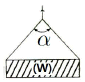
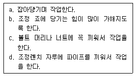

천장크레인운전기능사 (2011-04-17 기출문제)
1과목: 임의 구분
1. 과부하방지 장치용의 시브 피치원 직경과 당해 시브를 통과하는 와이어로프 직경과의 비율 기준으로 옳은 것은?
- 30 이상으로 할 수 있다.
- 20 이상으로 할 수 있다.
- 10 이상으로 할 수 있다.
- 5이상으로 할 수 있다.
(정답률: 39%)

2. 브레이크 블록의 구비조건으로 적당하지 않은 것은?
- 마찰계수가 작을 것
- 내마멸성이 클 것
- 내열성이 클 것
- 제동효과가 양호할 것
(정답률: 60%)
3. 천장크레인에 해당하는 것은?
- 지브 크레인
- 케이블 크레인
- 제철소용 원료 장입 크레인
- 언로더
(정답률: 65%)
4. 천장크레인 좌우레일의 수평차는 얼마 이내인가?
- ±5㎜
- ±10㎜
- ±15㎜
- ±20㎜
(정답률: 73%)
5. 브레이크 라이닝의 마모한도는 원치수의 몇 % 이내 인가?
- 30%
- 40%
- 50%
- 60%
(정답률: 90%)
6. 드럼직경(D)과 로프직경(d)의 비(D/d)는 몇 이상이어야 하는가?
- 15
- 20
- 25
- 30
(정답률: 86%)
7. 전압강하가 심할 때 브레이크용 전자석에서 발생하는 현상으로 가장 알맞은 것은?
- 과열한다.
- 충격이 일어난다.
- 작동시간이 빠르다.
- 어느 현상도 없다.
(정답률: 87%)
8. 양정을 설명한 것으로 맞는 것은?
- 양정이란 좌·우 주행레일 중심사이의 거리를 말한다.
- 양정이란 좌·우 주행차륜 중심사이의 거리를 말한다.
- 양정이란 훅이 움직일 수 있는 수직거리를 말한다.
- 양정이란 시브가 움직일 수 있는 수직거리를 말한다.
(정답률: 69%)
9. 천장크레인용 훅의 안전계수는?
- 5 이상
- 7이상
- 9 이상
- 10이상
(정답률: 90%)
10. 권상장치의 속도 제어용 브레이크로 가장 많이 사용되는 것은?
- 와류 브레이크
- 직류 전자 브레이크
- 교류 전자 브레이크
- 디스크 타입 전자 브레이크
(정답률: 85%)
11. 리미트 스위치(Limit Switch)의 동작점검 주기로 가장 적당한 것은?
- 매 일
- 매 주
- 매 월
- 매 년
(정답률: 83%)
12. 시브 및 와이어 드럼 홈의 지름은 와이어로프 공칭지름보다 얼마나 크게 하는 것이 가장 적당한가?
- 10%
- 20%
- 25%
- 30%
(정답률: 47%)
13. 양정이 50m를 넘는 천장 크레인의 사용하중 결정법으로 가장 적당한 것은?
- 와이어로프의 절단하중을 정격하중으로 한다.
- 와이어로프의 안전율은 정격하중에 훅과 블록의 무게만을 고려하여 정한다.
- 와이어로프의 안전율은 정격하중에 훅, 블록 및 로프 중량까지를 고려하여 정한다.
- 와이어로프의 안전율은 와이어로프의 절단하중에 대하여 정격하중을 2~3으로 하는 것이 적당하다.
(정답률: 75%)
14. 중추형 권과방지장치의 특징과 거리가 먼 것은?
- 매달린 중추의 위치에서 동작하므로 동작위치의 오차가 적다.
- 동작 후의 복귀거리가 짧다.
- 권상드럼의 회전수와 관련이 있어 와이어로프 교환시 위치를 조정할 필요가 있다.
- 권상위치 제한은 가능하나 권하위치의 제한은 불가능하다.
(정답률: 63%)
15. 거더(Girder)를 강판으로 용접하여 만든 것으로 대하중과 편심하중을 받는데 유리한 것은?
- 트러스 거더(Truss Girder)
- 플레이트 거더(Plate Girder)
- 박스 거더(Box Girder)
- I빔 거더(I Beam Girder)
(정답률: 77%)
16. 주행차륜의 축간거리와 스팬과의 관계에서 천장크레인이 사행하지 않는 조건으로 가장 알맞은 것은?
- (스팬/축간거리) ≤ 8
- (스팬/축간거리) ≤ 12
- (스팬/축간거리) ≤ 16
- (스팬/축간거리) ≤ 20
(정답률: 67%)
17. 직동식(중추) 리미트 스위치가 작동했을 때 훅과 프레임의거리는 최소 얼마 이상이어야 하는가?
- 0.⑤m 이상
- 0.5m 이상
- 1.5m이상
- 3m이상
(정답률: 58%)
18. 정격하중을 설명한 것으로 맞는 것은?
- 훅, 와이어로프, 버킷, 달아올림기구 등의 무게를 제외한 순수 취급하중을 말한다.
- 훅, 와이어로프, 버킷, 달아올림기구 등의 무게를 포함한 순수 취급하중을 말한다.
- 훅, 와이어로프, 프레임, 리미트 스위치의 무게를 제외한 순수 취급하중을 말한다.
- 훅, 와이어로프, 프레임, 리미트 스위치의 무게를 포함한 순수 취급하중을 말한다.
(정답률: 70%)
19. 크레인에서 정규 부하 시험 중 권하 속도의 허용 범위는?
- +10~-5%
- +25~-5%
- +30~-10%
- +30~-20%
(정답률: 48%)
20. 천장크레인의 주행레일 측면의 마모는 원래 규격치수의 몇 % 이내이어야 하는가?
- 3%
- 10%
- 15%
- 20%
(정답률: 80%)
2과목: 임의 구분
21. 절연 저항을 측정하는 것으로 맞는 것은?
- 암메타(Ammeter)
- 볼트메타(Volt Meter)
- 메가(Megger) 시험기
- 마그네트벨(Magnet Bell) 시험기
(정답률: 83%)
22. 저항기에 있어서 중간속도로 장시간 운전할 경우 일어나는 현상 설명으로 가장 적합한 것은?
- 저항기의 온도가 상승한다.
- 전동기의 온도가 내려간다.
- 다른 속도의 운전과 전동기 온도는 동일하다.
- 정격속도로 운전하는 것보다 유리하다.
(정답률: 82%)
23. 베어링의 일반적인 조립방법은?
- 망치로 베어링 양측을 번갈아 두드려 넣는다.
- 베어링 외측을 고무망치로 두드려 넣는다.
- 베어링 내륜에 면이 바른 어댑터를 대고 두드려 넣는다.
- 나무망치로 두드려 넣는다.
(정답률: 79%)
24. 크레인의 급유에 대하여 설명한 것 중 틀린 것은?
- 윤활유의 선정은 점도, 유막의 강도, 변질 가능성 등을 고려하여 선정한다.
- 그리스 니플에 급유시에는 그리스 건을 사용한다.
- 집중급유장치는 수동 또는 전동으로 급유관 및 분배변을 통하여 각각의 축 베어링에 일정량을 급유하는 방법이다.
- 그리스 컵이나 그리스 건을 사용하면 집중급유장치에 비하여 급유시간이 짧게 걸린다.
(정답률: 78%)
25. 감속기어의 소음발생 원인으로 가장 거리가 먼 것은?
- 피치 오차가 크면 소음이 많이 난다.
- 치면의 다듬질 정도가 거칠거나 흠이 있으면 소음이 난다.
- 헬리컬 기어를 사용하면 소음이 많이 난다.
- 윤활유가 없거나 부적당한 오일이면 소음이 난다.
(정답률: 77%)
26. 나사의 호칭 크기는 어느 것으로 나타내는가?
- 수나사의 바깥지름
- 수나사의 골지름
- 암사나의 안지름
- 수나사의 유효지름
(정답률: 78%)
27. 크레인에서 전기스파크가 일어났을 때 어떤 조치를 제일 먼저 취해야 하는가?
- 퓨즈를 끊는다.
- 메인 스위치를 OFF로 한다.
- 레버를 급속히 정위치로 한다.
- 전동기 스위치를 끈다.
(정답률: 86%)
28. 축과 보스에 작은 삼각형의 돌기 홈을 이용하여 고정하는 것은?
- 스플라인
- 세레이션
- 유니버셜 커플링
- 플렌지 커플링
(정답률: 56%)
29. 운전석 탑재식 천장크레인과 비교한 리모트 크레인의 설명으로 틀린 것은?
- 리모트크레인의 조종은 자격(천장크레인 운전기능사)면허의 제한을 받지 않는다.
- 운전자가 권상, 이동물체의 줄걸이 작업 수행이 가능하다.
- 고열, 운전자의 사각지대를 피하여 운전할 수 있다.
- 운전미숙, 작업 전 점검 소홀에 의한 재해발생 위험이 낮다.
(정답률: 42%)
30. 3상 유도전동기가 전압이 440V, 주파수가 60Hz, 회전체인 전동기의 극수가 4일 때의 동기속도(rpm)는?
- 880
- 1,800
- 13,200
- 6,600
(정답률: 76%)
31. 천장크레인의 재도장은 도장면적의 약 몇 퍼센트에 녹 또는 부식이 발생하였을 때 실시하는가?
- 3%
- 10%
- 50%
- 80%
(정답률: 70%)
32. 천장크레인의 보수관리에 대한 설명으로 틀린 것은?
- 예방보전과 사후보전으로 구분할 수 있다.
- 고장이 일어날 것 같은 부분을 계획적으로 교환·수리하는 것을 예방보전이라 한다.
- 권상장치의 수리는 사후보전에 속한다.
- 크레인의 모든 장치를 예방보전하는 것이 좋다.
(정답률: 83%)
33. 축 이음법 중 키와 볼트를 사용하는 것은?
- 플랜지 이음
- 마찰 원추형 이음
- 만능 이음
- 기어이음
(정답률: 75%)
34. 3.7kW 권선형 주행모터가 고장 났을 때 부품창고에 7.5kW 권선형 크레인 모터만 있다면 조치방법으로 가장 적합한 것은? (단, 극수 및 허용전압은 같다)
- 용량이 더 크므로 즉시 교체한다.
- 용량이 같지 않으면 속도제어가 불가능하여 사용할 수없다.
- 용량이 같지 않아 사용할 수 없으므로 시중에서 용량이 같은 일반 모터를 구입하여 교체한다.
- 용량이 더 크므로 모터 베드를 수정하여 셋팅한다.
(정답률: 25%)
35. 퓨즈가 끊길 때의 원인이 아닌 것은?
- 과부하가 걸렸을 때
- 회전자의 권선이 단락되었을 때
- 과전류가 흘렀을 때
- 리밋 스위치(Limit S/W)가 동작했을 때
(정답률: 77%)
36. 키(key)는 다음 어느 경우에 사용하는가?
- 축이 손상되었을 때
- 압연재나 현재를 영구적으로 연결할 때
- 축에 풀리, 기어 등을 고정시킬 때
- 와이어로프가 손상되었을 때
(정답률: 73%)
37. 크레인의 일반적인 기동법으로 맞는 것은?
- 2차 저항 기동법
- ΔY 기동법
- 리액터 기동법
- 소프터 스타터 기동법
(정답률: 85%)
38. 운전자가 가장 올바르게 권상작업을 한 것은?
- 훅은 화물 중앙에 정확히 맞추고 주행과 권상을 동시 작동한다.
- 줄걸이 와이어가 완전히 힘을 받아 팽팽해지면 일단 정지한다.
- 횡행 작동은 흔들릴 위험이 없으므로 항상 최고속도로 운전한다.
- 훅을 화물의 중앙위치에 맞추었으면 바로 권상을 하여 2m이상 높이에서 멈춘다.
(정답률: 62%)
39. 천장크레인의 전원공급은 트롤리선으로 하며 선의 배열 방법에는 수평배열과 수직배열이 있다. 트롤리선의 종류가 아닌 것은?
- 경동 트롤리선
- 애자 트롤리선
- 앵글 동 바 트롤리선
- 레일 트롤리선
(정답률: 61%)
40. 천장크레인의 운전 전 점검사항으로 적당하지 않은 것은?
- 브레이크 라이닝의 마모 정도
- 리미트 스위치의 작동 여부
- 컨트롤러 접촉자의 접촉상태를 눈으로 직접 확인
- 권상용 감속기의 오일량
(정답률: 66%)
3과목: 임의 구분
41. 그림과 같이 줄걸이용 와이어로프로 짐을 달아 올릴 때 안전각도 (α)는 일반적으로 얼마 이내로 하여야 하는가?

- 30° 이내
- 45° 이내
- 60° 이내
- 70° 이내
(정답률: 84%)
42. 줄걸이 작업자가 양중물의 중심을 잘못 잡아 훅에 로프를 걸었을 때 발생할 수 있는 것과 관계가 없는 것은?
- 양중물이 생각하지도 않은 방향으로 간다.
- 매단 양중물이 회전하여 로프가 비틀어진다.
- 크레인에 전혀 영향이 없다.
- 양중물이 한쪽 방향으로 쏠려 넘어진다.
(정답률: 91%)
43. 크레인에서 체인의 링크 단면지름 감소량에 따른 교체시기는?
- 5%
- 10%
- 2%
- 3%
(정답률: 60%)
44. 크레인의 권상용 와이어로프 안전계수는 최소 얼마로 할 것이 요구되는가?
- 3 이상
- 5 이상
- 7 이상
- 10 이상
(정답률: 76%)
45. 와이어로프 끝의 단말 고정법 중 효율을 100% 유지할 수있으며, 줄걸이 용에서 거의 사용하지 않는 방법은?
- 쐐기 고정
- 클립 고정
- 합금 고정
- 아이 스플라이스
(정답률: 63%)
46. 와이어로프에서 소선을 꼬아 합친 것은?
- 심강
- 트래드
- 공심
- 스트랜드
(정답률: 84%)
47. 메다는 체인의 설명 중 틀린 것은?
- 장기 사용으로 연결 부분의 안쪽이 마모된다.
- 균열이 있을 경우에는 전기용접으로 보수하여 재사용하는 것이 좋다.
- 링크의 이음매가 벗겨질 수도 있으므로 유의하여야 한다.
- 링크의 단면 직경이 제조시보다 10% 이상 감소한 것은 사용할 수 없다.
(정답률: 93%)
48. 크레인 신호 중 한 손을 들어 올려 주먹을 쥐는 신호는?
- 정지
- 비상정지
- 작업완료
- 위로 올리기
(정답률: 92%)
49. 신호자는 신호에 의하지 않고 운전할 수 있는 경우는?
- 공장장이 허락한 경우
- 비상시의 급정지
- 신호자의 신호가 잘못되었다고 생각될 때
- 작업사항이 잘못되었다고 생각할 경우
(정답률: 92%)
50. 크레인용 와이어로프에 대한 설명 중 올바른 것은?
- 보통 꼬임은 랭 꼬임에 비해서 소선 꼬기의 경사가 완만하다.
- 꼬임이 되풀리 되는 경우가 적고 킹크가 생기는 경향이 적은 것이 보통 꼬임이다.
- 와이어로프의 직경의 허용차는 ±7%이다.
- 크레인용 와이어로프는 주로 아연도금을 한 파단강도가 높은 것을 사용한다.
(정답률: 63%)
51. 벨트 취급에 대한 안전사항 중 틀린 것은?
- 벨트 교환시 회전을 완전히 멈춘 상태에서 한다.
- 벨트의 회전을 정지시킬 때 손으로 잡는다.
- 벨트에는 적당한 장력을 유지하도록 한다.
- 고무벨트에는 기름이 묻지 않도록 한다.
(정답률: 93%)
52. 화재가 발생하기 위해서는 3가지 요소가 있는데 모두 맞는 것으로 연결된 것은?
- 가연성 물질 - 점화원 -산소
- 산화 물질 - 소화원 -산소
- 산화 물질 - 점화원 -질소
- 가연성 물질 - 소화원 -산소
(정답률: 88%)
53. 작업장의 안전수칙 중 틀린 것은?
- 공구는 오래 사용하기 위하여 기름을 묻혀서 사용한다.
- 작업복과 안전장구는 반드시 착용한다.
- 각종 기계를 불필요하게 공회전 시키지 않는다.
- 기계의 청소나 손질은 운전을 정지시킨 후 실시한다.
(정답률: 93%)
54. 수공구류의 일반적인 안전수칙이다. 해당되지 않는 것은?
- 손이나 공구에 묻은 기름, 물 등을 닦아낼 것
- 주의를 정리 정돈할 것
- 규격에 맞는 공구를 사용할 것
- 수공구는 그 목적 외에 다목적으로 사용할 것
(정답률: 91%)
55. 일반적인 작업장에서 작업안전을 위한 복장으로 가장 적합 하지 않은 것은?
- 작업복의 착용
- 안전모의 착용
- 안전화의 착용
- 선글라스 착용
(정답률: 90%)
56. 안전제일에서 가장 먼저 선행되어야 하는 이념으로 맞는 것은?
- 재산 보호
- 생산성 향상
- 신뢰성 향상
- 인명 보호
(정답률: 96%)
57. 전기 용접 아크 광선에 대한 설명 중 틀린 것은?
- 전기 용접 아크에는 다량의 자외선이 포함되어 있다.
- 전기 용접 아크를 볼 때에는 헬멧이나 실드를 사용하여야 한다.
- 전기 용접 아크 빛에 의해 눈이 따가울 때에는 따뜻한 물로 눈을 닦는다.
- 전기 용접 아크 빛이 직접 눈으로 들어오면 전광성 안염 등의 눈병이 발생한다.
(정답률: 82%)
58. 보기의 조정렌치 사용상 안전수칙 중 옳은 것은?

- a, b
- a, c
- b, c
- b, d
(정답률: 74%)
59. 작업장에서 중량물을 들어 올리는 방법 중 안전상 가장 올바른 것은?
- 최대한 사람의 힘을 모아들어 올린다.
- 지렛대를 이용한다.
- 로프로 묶고 잡아당긴다.
- 체인블록을 이용하여 들어 올린다.
(정답률: 75%)
60. 안전·보건표지의 종류와 형태에서 그림의 안전표지판이 나타내는 것은?
- 응급구호 표지
- 비상구 표지
- 위험 장소 경고 표지
- 환경 지역 표지
(정답률: 100%)